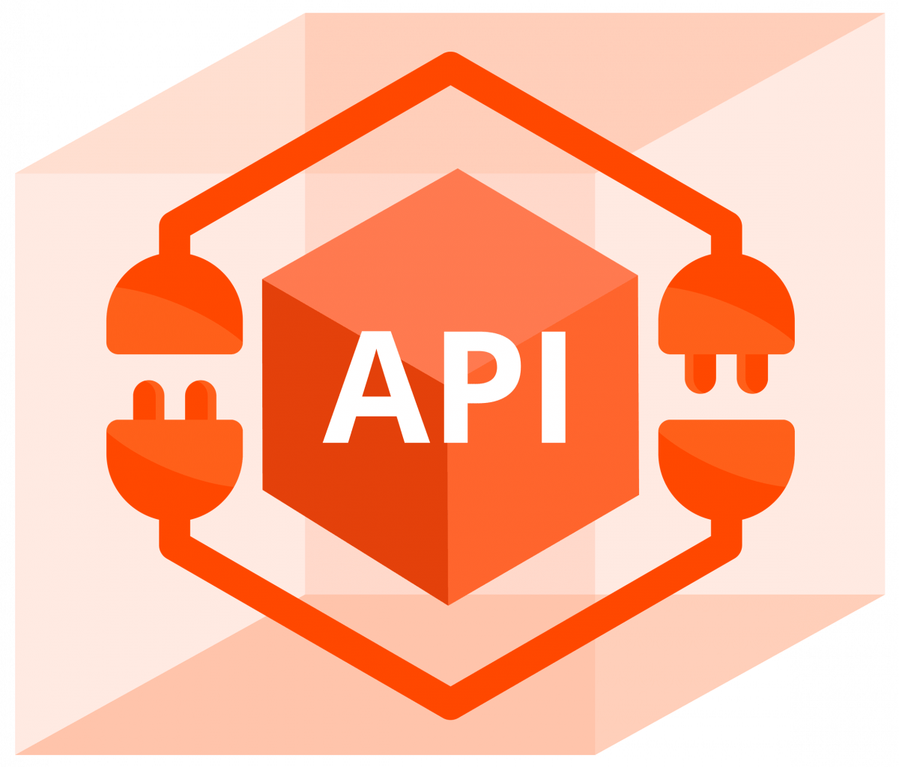
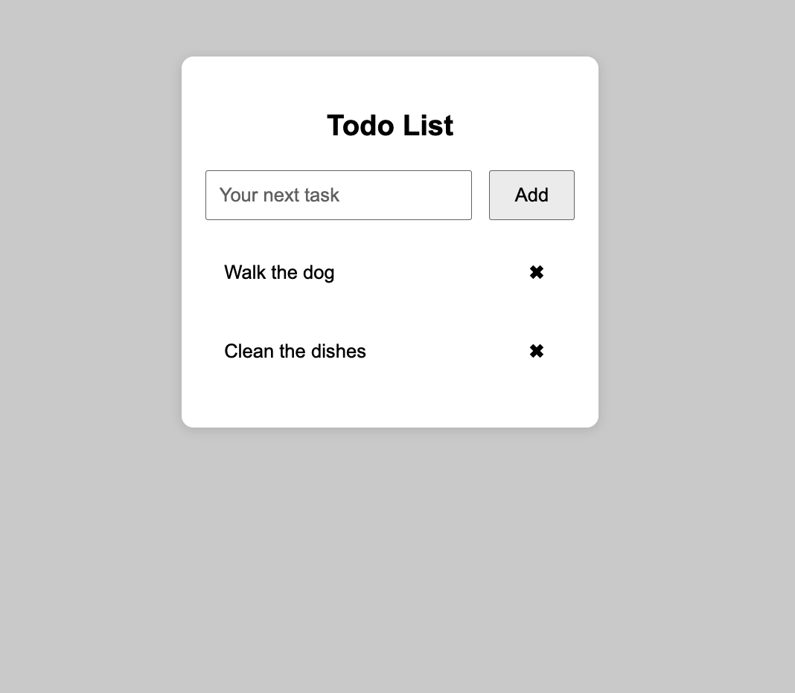
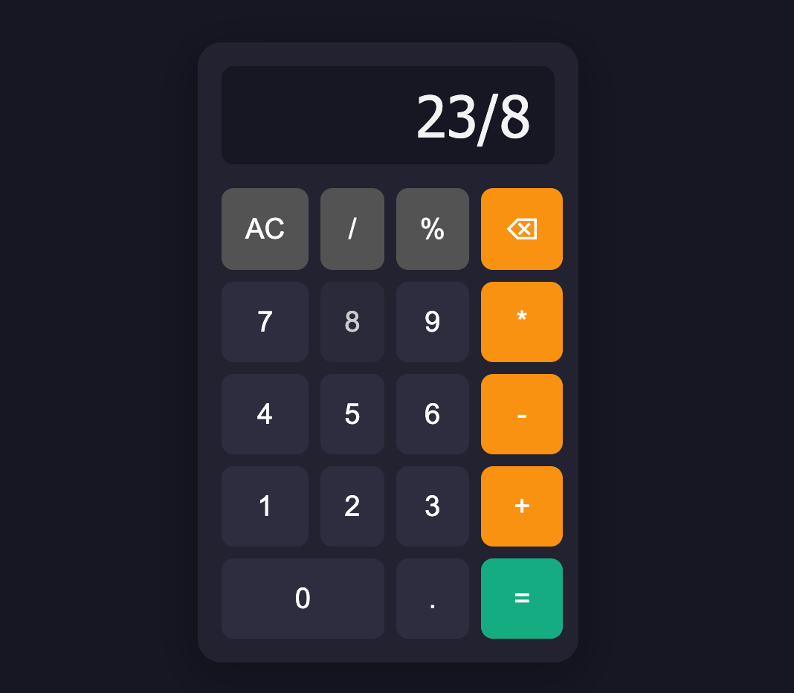
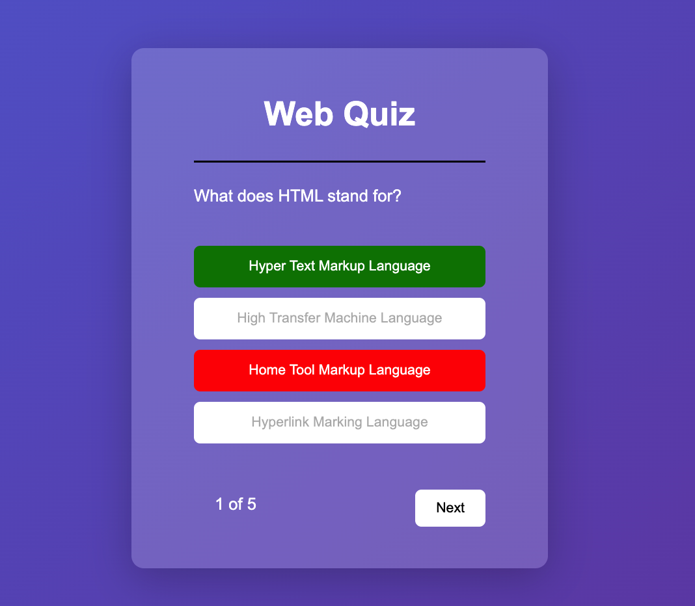
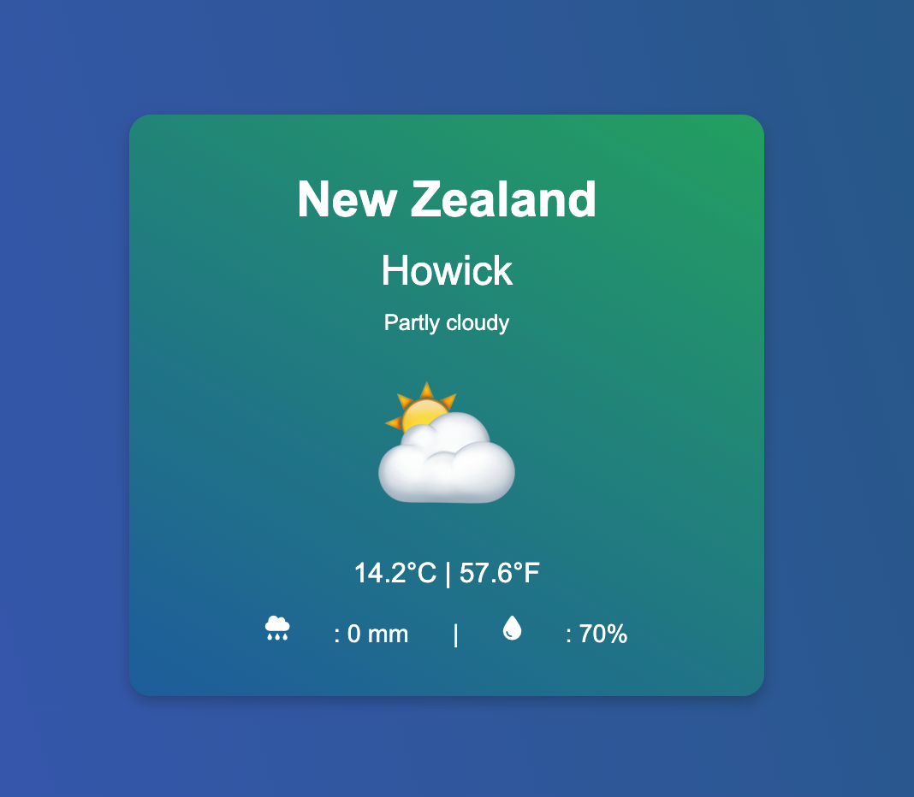

About Me
Hi, I’m Mehar! I’m all about creating cool stuff that lives on the internet. My web development journey started when my brother basically forced me to build a website for him — and honestly, I haven’t looked back since. Now, I’m on a mission to level up my skills and craft websites that don’t just work but actually grab your attention and make you go, “Wow, that’s neat!”
Download Resume
Skills
Over the past few months, I’ve been actively self-learning HTML through hands-on practice and projects. I’ve also completed a certification to formally validate my skills.
While learning HTML, I’ve simultaneously been developing my CSS skills through hands-on practice and coursework, and I’ve completed a certificate to validate this progress.

JavaScript
After completing my HTML and CSS course, I continued my learning journey by completing a JavaScript course to deepen my understanding of web development.

I’ve been gradually teaching myself how to work with APIs and integrating them effectively into my websites to enhance functionality.
Git has been an essential tool in my workflow, helping me track changes, manage version control, and deploy my websites for others to test and explore.
Visual Studio Code has been my primary code editor, but I’m open to learning and working with other editors as needed.
Projects

To Do List
This was the first project I completed with minimal support, during which I learned how to structure HTML and CSS efficiently, debug JavaScript issues, and manage the project independently.

Calculator
Once I completed the To-Do List project, I began exploring ways to make my designs more interactive and user-friendly. I also learned how to use JavaScript’s built-in functions to process user input and deliver clear, well-formatted results.

Quiz App
This quiz app allowed me to practice reading external data in JavaScript and using objects to organize questions and answers. It helped me strengthen my skills in data handling and dynamic content rendering.

Weather App
During the development of the Weather App, I gained hands-on experience working with APIs—using geolocation to obtain the user’s coordinates and then integrating the Open-Meteo API to display real-time weather data in a clear, readable layout.
Contact Me
Email: mehar.lall@gmail.com
Phone Number: (+64) 027 238 5694
GitHub: https://github.com/Melall462